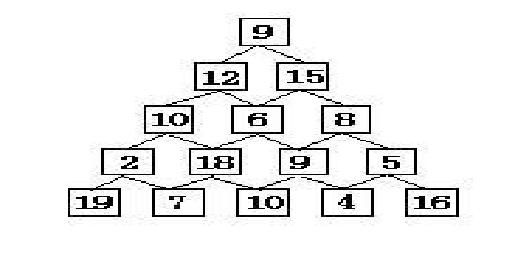

动态规划
（Dynamic programming）
数塔问题
有形如下图所示的数塔，从顶部出发，在每一结点可以选择向左走或是向右走，一直走到底层，要求找出一条路径，使路径上的值最大。

输入
输入数据首先包括一个整数C,表示测试实例的个数，每个测试实例的第一行是一个整数N(1 <= N <= 100)，表示数塔的高度，接下来用N行数字表示数塔，其中第i行有个i个整数，且所有的整数均在区间[0,99]内。
输出
对于每个测试实例，输出可能得到的最大和，每个实例的输出占一行。
样例输入
1 | 1 |
2 | 5 |
3 | 7 |
4 | 3 8 |
5 | 8 1 0 |
6 | 2 7 4 4 |
7 | 4 5 2 6 5 |
样例输出
30
分析
这道题如果用枚举法（暴力思想），在数塔层数稍大的情况下（如31），则需要列举出的路径条数将是一个非常庞大的数目（2^30= 1024^3 > 10^9=10亿）
~从顶点出发时到底向左走还是向右走应取决于是从左走能取到最大值还是从右走能取到最大值，只要左右两道路径上的最大值求出来了才能作出决策。
同样，下一层的走向又要取决于再下一层上的最大值是否已经求出才能决策。这样一层一层推下去，直到倒数第二层时就非常明了。
如数字2，只要选择它下面较大值的结点19前进就可以了。所以实际求解时，可从底层开始，层层递进，最后得到最大值。
结论：自顶向下的分析，自底向上的计算。
如果从下(倒数第二层)往上走，每次选最优解，可以少最后一层的步骤~~
代码
1 | #include<bits/stdc++.h> |
2 | using namespace std; |
3 | int dp[110][110]; |
4 | int main(){ |
5 | int n,t; |
6 | scanf("%d",&t); |
7 | while(t--){ |
8 | scanf("%d",&n); |
9 | for(int i=1;i<=n;i++){ |
10 | for(int j=1;j<=i;j++){ |
11 | scanf("%d",&dp[i][j]); |
12 | } |
13 | } |
14 | for(int i=n-1;i>0;i--){ |
15 | for(int j=1;j<=i;j++){ //每次与下两个取最优 |
16 | dp[i][j]+=max(dp[i+1][j],dp[i+1][j+1]); |
17 | } |
18 | } |
19 | printf("%d\n",dp[1][1]); |
20 | } |
21 | return 0; |
22 | } |
感谢刘老师